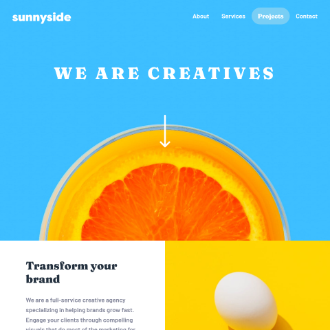
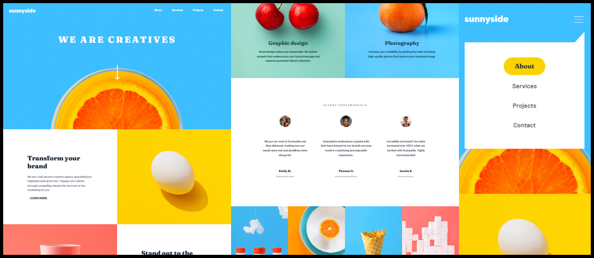

david
built with HTML5 and Sass
This is a frontendmentor.io project to build an application to design specifications that will look great on any device. The code and live application are hosted on github!
Highlights
My Experience
This frontendmentor project was an easy choice because the colors and images are so vivid and the layout had some fun challenges. Please use the link to the application to take a virtual stroll on a beautiful sunny day!
With this project, I wanted to focus on using Sass and become comfortable with coding CSS with a preprocessor. I focused on core features of Sass like variables, functions, and mixins. Likewise, I learn how to use partials and how to implement them with the @use and @forward methods.
While they were not new topics, I got some really good practice at using absolute and relative positioning. I must admit that I had only used them in very limited capacities before, but it seemed natural to use those methods on the navigation menu and the services section (text overlaid on the cherries and whole orange images).